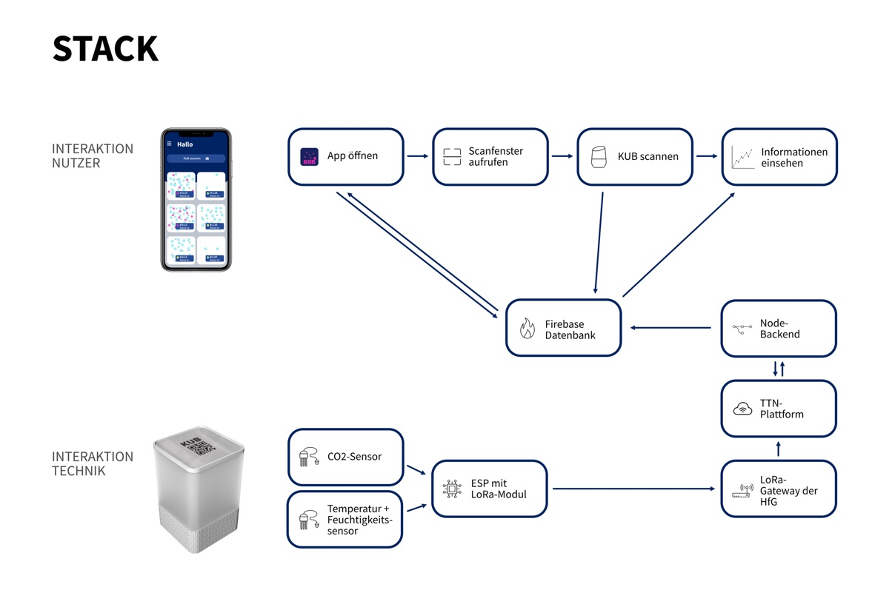
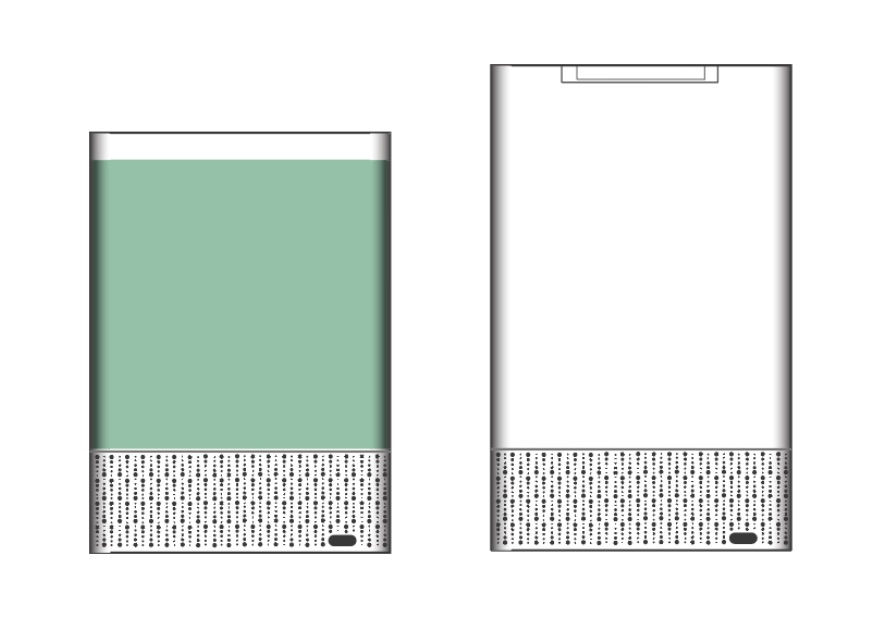

A smart CO2 - warning system
In our seminary week on the Hfg, we had permanent the window open because of Covid. So the question that arises to us - " When is enough fresh air in the Room, before we can close the window?" We come up with the idea to measure this information. Especially in schools is it helpful, because there was constantly the window open in the wintertime.Ideate
At first we did research on the act of Co2-particles & viruses in a room. We procure the proper sensors, so we can quantify the Data. In the following step we take a closer look on several user groups therfor we us methods like Stakeholdermap, user scenarios and interviews. With all the collected information we define our use case. "For an optimal working space teachers and students need the best circumambient air, to unfold they maximum potential. Here helps KUB with an ideal air conditions by warning for bad air and contagiousness." Implement first ideas in to sketches - see picture on the left.Prototyping
Our Prototyp is a working Product, which we implemented with code. The Co2-sensor, temperature & humidity sensor are connected with the LoRaWAN-ESP. The LoRaWAN send the measurements to an Gateway, the data end up on the TTN (The Things Network) platform. Via the TTN-platform the measured data goes over to the MQTT (Message Queuing Telemetry Transport) and from there it transmitted to the Node backend. The Node backend on the other hand is with our databank connected, who we created in Firebase. In the frontend we use Flutter as framework for our Mobile App. So when the user open the App and scan the QR-Code which is in the room. The App shows the live data, where it get from the databank.The Full-Stack:
 We want the LoRaWAN, because it should work independently without the Wifi. The measuring station came out the 3D-printer, in the inside the station are the sensors, rgb-leds & the LoRaWAN-ESP.  The outworking App: